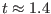

The interaction of continuous and discrete event models is necessarily discrete. For example, a digital thermometer reports temperature in discrete increments, electrical switches are either open or closed, a threshold sensor is either tripped or it is not. Discrete interactions in a combined continuous-discrete event simulation are managed just as before: the models interact by producing output events and reacting to input events.
If, on the other hand, two systems interact continuously, then those interacting parts are modeled with continuous equations. In this case, accurate simulation is greatly facilitated by lumping the two systems into a single assembly. In Adevs this assembly is an Atomic model that encapsulates the system's continuous dynamics. The essence of this approach to combined simulation in Adevs consists therefore of building atomic models that i) approximate the behavior of the continuous systems and ii) generates and consumes events at the instants when the continuous system interacts with a discrete event one.
There are three possibly outcomes of this lumping process. One possibility is that we end up with a single assembly. In this case our model is essentially continuous and we are probably better off using a simulation tool for continuous systems. At the other extreme, we find that the continuous parts of our model are very simple, yielding to analytical solutions that are easily transformed into discrete event models. Between these extremes are models with continuous dynamics that are not simple but do not dominate the modeling problem. The continuous system simulation part of Adevs is aimed at this type of model.
This model has two continuous state variables: the height and the velocity of the cherry bomb. Between events, these variables are governed by the pair of differential equations
Equations 7.1, 7.2, and 7.3 are the state variable derivatives, and these equations are implemented in the der_func method of the ode_system class. The signature for this method is
void der_func(const double* q, double* dq)The q pointer is the array of state variable values: , , and
Equation 7.4 is a state event condition and it is implemented in two parts. The state_event_func method implements the `if' part (left hand side) of the condition. The signature of this method is
void state_event_func(const double *q, double *z)Again, the supplied q array contains the current state variable values. These are used to evaluate the state event condition and store the result in the z array. The simulator detects state events by looking for changes in the sign of the z array entries. Note that the event condition should be continuous in the state variables on which it depends. In the case of the cherry bomb this is simple to do. We simply use if and if .
The `then' part (right hand side) is implemented with the internal_event method, which the simulator invokes when the state event condition is true. The signature of this method is
void internal_event(double *q, const bool *state_event)where the q array contains the value of the state variables at the event. The entries of the array state_event are true for each z in the state event condition array that evaluates to zero. This array therefore has one entry for each state event condition, and it has one additional entry to indicate time events, which are described below.
The cherry bomb has one discrete state variable with three possible values: the fuse is lit, the fuse is not lit, and the bomb is exploded. This variable changes in response to two events. The first event is when the bomb explodes. This is a time event that we know will occur 2 seconds from the time that the fuse it lit. The time_event_func method is used to schedule the explosion by returning the time remaining until the fuse burns out. The signature of the of this method is
double time_event_func(const double* q)As before, the q array has the current value of the state variables. The time_event_func is similar to the ta method. It is used to schedule autonomous events based on the current value of the model's state variables. When this time expires, the simulator calls the internal_event method with the last flag in the state event array set to true.
The second event that can change the state of the fuse is dousing with water. This an external event. External events occur when input arrives at the model. The external_event method implements the response of the cherry bomb to dousing with water. Its signature is
void external_event(double *q, double e, const Bag<X> &xb)The array q contains the values of the continuous state variables, e is the time since the last discrete event, and xb is the bag of input. The douse event is an input and it appears in the input bag xb when and if the event occurs.
As before, it is possible for an external and internal event to coincide. When this happens, the simulator calls the method confluent_event. Its signature is
void confluent_event (double *q, const bool *state_event, const Bag<X> &xb)and its arguments are as described for the internal and external methods.
The cherry bomb produces an output event when it explodes, and the output_func method is used for this purpose. Its signature is
void output_func(const double *q, const bool *state_event, Bag<X> &yb)The q and state_event arguments are as described for the internal_event method, and the bag yb is to be filled with the model's output. As with an Atomic model, the output_func is always invoked immediately prior to the internal_event and confluent_event methods.
All that remains in the implementation is the gc_output for collecting garbage, a constructor, and a method for initializing the continuous state variables. The gc_output method works identically to that of the Atomic class. The constructor for the cherry bomb must call the constructor of its ode_system base class. The signature of this method is
ode_system (int N_vars, int M_event_funcs)where N_vars is the number of entries in the q and dq arrays (i.e., the number of continuous state variables) and M_event_funcs is the number of entries in the z and state_event arrays (plus one for the time event). For the cherry bomb, N_vars is three and M_event_funcs is one.
The constructor for the cherry bomb does not initialize the continuous state variables. Instead, the simulator calls its init method whose signature is
void init(double* q)where q is an array that should be filled with the initial values for the continuous variables , , and
#include "adevs.h"
#include <iostream>
using namespace std;
using namespace adevs;
// Array indices for the CherryBomb state variables
#define H 0
#define V 1
#define T 2
// Discrete variable enumeration for the CherryBomb
typedef enum { FUSE_LIT, DOUSE, EXPLODE } Phase;
class CherryBomb: public ode_system<string> {
public:
CherryBomb():ode_system<string>(
3, // three state variables including time
1 // 1 state event condition
) {
phase = FUSE_LIT; // Light the fuse!
}
void init(double *q) {
q[H] = 1.0; // Initial height
q[V] = 0.0; // Initial velocity
q[T] = 0.0; // Start time at zero
}
void der_func(const double* q, double* dq) {
dq[V] = -9.8;
dq[H] = q[V];
dq[T] = 1.0;
}
void state_event_func(const double* q, double *z) {
// Test for hitting the ground.
if (q[V] < 0.0) z[0] = q[H];
else z[0] = 1.0;
}
double time_event_func(const double* q) {
if (q[T] < 2.0) return 2.0 - q[T]; // Explode at time 2
else return DBL_MAX; // Don't do anything after that
}
void external_event(double* q, double e, const Bag<string>& xb) {
phase = DOUSE; // Any input is a douse event
}
void internal_event(double* q, const bool* state_event) {
if (state_event[0]) q[V] = -q[V]; // Bounce!
if (state_event[1]) phase = EXPLODE;
}
void confluent_event(double* q, const bool* state_event,
const Bag<string>& xb) {
internal_event(q,state_event);
external_event(q,0.0,xb);
}
void output_func(const double *q, const bool* state_event,
Bag<string>& yb) {
if (state_event[1] && phase == FUSE_LIT)
yb.insert("BOOM!"); // Explode!
}
void postStep(const double* q) {
// Write the current state to std out
cout << q[T] << " " << q[H] << " " << q[V] << " " << phase << endl;
}
// No garbage collection is needed
void gc_output(Bag<string>&){}
// Get the current value of the discrete variable
Phase getPhase() { return phase; }
private:
Phase phase;
};
The CherryBomb itself is not derived from Atomic and so cannot be simulated directly. Rather, it is given to a Hybrid object, which is a kind of Atomic, that generators the trajectories for the model. This Hybrid object is used just like any other Atomic model. Input to this Hybrid object triggers an input event for the ode_system that is contains. Likewise, output from the ode_system becomes output from the Hybrid object. Most importantly, the hybrid model can be part of any network of discrete event models.
A Hybrid object is provided with three things when it is constructed. First is the ode_system itself. Second is an ode_solver that produces the model's continuous trajectories. Adevs has two types of ode_solvers: a corrected_euler solver that uses the corrected Euler method and a rk_45 solver that uses a fourth/fifth order Runge-Kutta method. Third is an event_locator that finds the location of state events as the simulation progresses. Adevs has two these: the linear_event_locator and bisection_event_locator. The code below shows how these are used to create and simulate a Hybrid object.
int main() {
// Create the model
CherryBomb* bomb = new CherryBomb();
// Create the ODE solver for this model. Maximum error
// tolerance at each step is 1E-4 and the maximum
// size of an integration step is 0.01.
ode_solver<string>* ode_solve =
new corrected_euler<string>(bomb,1E-4,0.01);
// Create the event locator for this model. Maximum
// error tolerance for the location of an event in
// the state space is 1E-8.
event_locator<string>* event_find =
new linear_event_locator<string>(bomb,1E-8);
// Create an atomic model that puts all of these
// together to simulate the continuous system.
Hybrid<string>* model =
new Hybrid<string>(bomb,ode_solve,event_find);
// Create and run a simulator for this model
Simulator<string>* sim = new Simulator<string>(model);
while (bomb->getPhase() == FUSE_LIT)
sim->execNextEvent();
delete sim; delete bomb;
return 0;
}
Figure 7.1 shows the cherry bomb's trajectory from to its explosion at . This plot was produced using the simulation program listed above. There are two bounce events at and  . The cherry bomb explodes abruptly at the start of its third descent.
To take advantage of the Modelica language, you will need to get and install from source the OpenModelica compiler, which is hosted at http://www.openmodelica.org/. Instructions for building the compiler, source code for the compiler, and other information on the Modelica language are available from the Open Modelica group and at the Modelica Associate website https://www.modelica.org/. Instructions for building the adevs runtime environment for OpenModelica may be found in the README file in the top level of directory of the adevs package.
The adevs runtime environment for OpenModelica is relatively new, but aims to support most of the functionality of the standard OpenModelica runtime system with the following important caveats:
Assuming you have a working compiler, you may generate an adevs model with the command 'omc +s +simCodeTarget=Adevs myModel.mo' where myModel.mo is the name of your Modelica model file. The adevs/examples/modelica directory has several examples of Modelica models and instructions for compiling them. One such model is shown here to demonstrate the general approach to hybrid modeling with adevs and OpenModelica. The code and makefiles for this example can be found in the adevs/examples/modelica directory.
Consider a simple circuit that consists of a voltage source connected to a resistor with its other terminal grounded (i.e., Voltage source - resistor - ground). The voltage source has a set point Vref that is controlled discretely. The equation governing the behavior of the voltage source is
connector Pin
flow Real i;
Real v;
end Pin;
partial model OnePin
Pin T;
end OnePin;
partial model TwoPin
Pin T1;
Pin T2;
end TwoPin;
class Resistor extends TwoPin;
parameter Real R(start=1);
equation
T1.v-T2.v = T1.i*R;
T1.i + T2.i = 0;
end Resistor;
class Ground extends OnePin;
equation
T.v = 0;
end Ground;
class VoltageSource extends OnePin;
parameter Real Vref(start=0);
equation
der(T.v) =
if Vref > T.v then (abs(Vref-T.v))^(1.0/3.0)
else -(abs(Vref-T.v))^(1.0/3.0);
initial equation
der(T.v) = 0;
end VoltageSource;
class Circuit
VoltageSource V;
Resistor R;
Ground Gnd;
equation
connect(V.T,R.T1);
connect(R.T2,Gnd.T);
end Circuit;
To compile this model, issue the command 'omc +s +simCodeTarget=Adevs Circuit.mo'. This creates a C++ class called Circuit. Two files are created that implement this class: Circuit.h and Circuit.cpp. The header file is the most informative, and an abbreviated listing is shown below.
#ifndef __omc_Circuit_h_
#define __omc_Circuit_h_
#include "adevs.h"
/**
* Define the input and output type of the adevs models.
*/
#ifndef OMC_ADEVS_IO_TYPE
#define OMC_ADEVS_IO_TYPE double
#endif
/**
* Simulation code for Circuit
* generated by the OpenModelica Compiler.
*/
class Circuit:
public adevs::ode_system<OMC_ADEVS_IO_TYPE>
{
public:
/**
* Constructor. New state events can be added to the model by
* passing the number of new event conditions to the constructor
* and then extending the state_event_func method. Your state
* events will begin at the index returned by numStateEvents().
*/
Circuit(int extra_state_events = 0);
/// Destructor
~Circuit();
/// Index of the first extra state event
int numStateEvents() const { return 1; }
/**
* These methods are generated by the OpenModelica compiler.
*/
void init(double* q);
void der_func(const double* q, double* dq);
void postStep(const double* q);
void state_event_func(const double* q, double* z);
/**
* These methods may be overridden by any derived class.
*/
virtual void extra_state_event_funcs(double* z){}
double time_event_func(const double* q) { return DBL_MAX; }
void internal_event(double* q, const bool* state_event);
void external_event(double* q, double e,
const adevs::Bag<OMC_ADEVS_IO_TYPE>& xb){}
void confluent_event(double *q, const bool* state_event,
const adevs::Bag<OMC_ADEVS_IO_TYPE>& xb){}
void output_func(const double *q, const bool* state_event,
adevs::Bag<OMC_ADEVS_IO_TYPE>& yb){}
void gc_output(adevs::Bag<OMC_ADEVS_IO_TYPE>& gb){}
/**
* These methods are used to access variables and
* parameters in the modelica model by name.
*/
double get_time() const { return timeValue; }
double get_$PV$PT$Pv() const { return $PV$PT$Pv; }
double get_$P$DER$PV$PT$Pv() const { return $P$DER$PV$PT$Pv; }
double get_$PGnd$PT$Pi() const { return $PGnd$PT$Pi; }
double get_$PR$PT2$Pv() const { return $PR$PT2$Pv; }
double get_$PGnd$PT$Pv() const { return $PGnd$PT$Pv; }
double get_$PV$PVref() const { return $PV$PVref; }
double get_$PR$PR() const { return $PR$PR; }
protected:
/**
* Calculate the values of the state and algebraic variables.
* State variables will be initialized to q if provided,
* or left unchanged if not.
*/
void update_vars(const double* q = NULL, bool doReinit = false);
/**
* These methods may be used to change parameters
* and state variables at events. Remember to call
* update_vars(q,true) if you change anything.
*/
void set_$PV$PT$Pv(double* q, double val) { q[0] = $PV$PT$Pv=val; }
void set_$PV$PVref(double val) { $PV$PVref=val; }
void set_$PR$PR(double val) { $PR$PR=val; }
};
#endif
This Circuit class can be used as is or (as I will soon show) be extended to add new, discrete event dynamics to it. The major features of this class are as follows:
For this example, the circuit class is extended to accept as input discrete changes to Vref and to produce as output the voltage when Vref is reached. These new behaviors are implemented in a derived class called CircuitExt, which adds the following:
/**
* This class extends the Modelica Circuit model to
* add an output when v = Vref and to adjust Vref
* on receiving discrete input.
*/
class CircuitExt:
public Circuit
{
public:
CircuitExt():
Circuit(1), // Add one state event to the base class
atVref(false) // Flag to indicate when Vref is reached
{
}
/**
* Compute the extra state event.
*/
void extra_state_event_funcs(double* z)
{
if (!atVref)
z[0] = get_$PV$PT$Pv()-get_$PV$PVref();
else
z[0] = 1.0;
}
/**
* Indicate that Vref has been reached when that event
* occurs.
*/
void internal_event(double* q, const bool* event_flags)
{
// Apply the internal event function of the base class
Circuit::internal_event(q,event_flags);
// If this is the extra state event, then set atVref to true
if (event_flags[numStateEvents()]) atVref = true;
}
/**
* Change Vref on receiving input.
*/
void external_event(double* q, double e, const Bag<double>& xb)
{
// Apply the external event function of the base class
Circuit::external_event(q,e,xb);
// Set the reference voltage and indicate that we are no longer
// at the reference.
set_$PV$PVref(*(xb.begin()));
atVref = false;
// Reinitialize the continuous model. This is really only necessary
// if your discrete event may result in new values for the
// state variables (discrete or continuous) of the modelica model.
update_vars(q,true);
}
void confluent_event(double* q, const bool * event_flags,
const Bag<double>& xb)
{
internal_event(q,event_flags);
external_event(q,0.0,xb);
}
void output_func(const double* q, const bool* event_flags,
Bag<double>& yb)
{
// If this was the reference being reached, then
// output the current value of the voltage.
if (event_flags[numStateEvents()])
{
yb.insert(get_$PV$PT$Pv());
cerr << "Reached Vref=" << get_$PV$PT$Pv()
<< " @ t=" << get_time() << endl;
}
}
void print_state()
{
cout <<
get_time() << " " << // Print the time
get_$PV$PT$Pv() << " " << // The voltage
get_$PGnd$PT$Pi() << " " << // Current through the resistor
endl;
}
private:
bool atVref;
};
The main function for a simulation of this model is shown below. The main simulation routine injects an event at and runs the simulation for another two seconds to . A plot of the trajectory for this model and its input and output events are shown in Fig. 7.2 below.
int main()
{
// Create the circuit
CircuitExt* model = new CircuitExt();
// Create an atomic model to simulate it
Hybrid<OMC_ADEVS_IO_TYPE>* hybrid_model =
new Hybrid<OMC_ADEVS_IO_TYPE>(
model,
new corrected_euler<OMC_ADEVS_IO_TYPE>(model,1E-5,0.01),
new linear_event_locator<OMC_ADEVS_IO_TYPE>(model,1E-5));
// Create the simulator
Simulator<OMC_ADEVS_IO_TYPE>* sim =
new Simulator<OMC_ADEVS_IO_TYPE>(hybrid_model);
model->print_state();
// Simulate to t = 1
while (sim->nextEventTime() <= 1.0)
{
sim->execNextEvent();
model->print_state();
}
// Inject an input
Bag<Event<double> > input_bag;
input_bag.insert(Event<double>(hybrid_model,0.5));
sim->computeNextState(input_bag,1.0);
// Simulate from t=1 to t=5
while (sim->nextEventTime() <= 3.0)
{
sim->execNextEvent();
model->print_state();
}
// Done, cleanup
delete sim;
delete hybrid_model;
return 0;
}